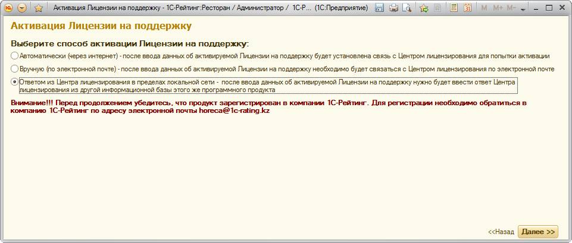
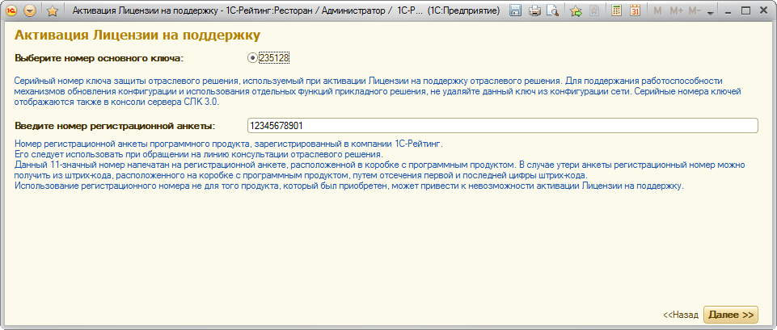
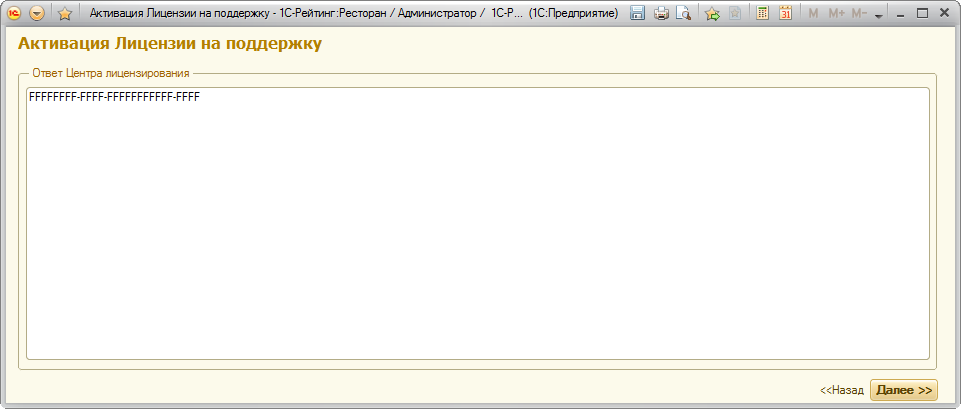

Данная инструкция применима в тех случаях, когда в локальной сети предприятия создано несколько различных информационных баз одного и того же программного продукта, и активацию Лицензии необходимо произвести во всех этих базах.
После того, как в одной из информационных баз произведена активация автоматическим или ручным способом, ответ из Центра лицензирования может быть использован для активации Лицензии на поддержку в других базах. Этот ответ может быть сохранен ранее, при выполнении активации, либо можно открыть обработку «Сведения о Лицензии на поддержку» в базе, в которой уже выполнена активация, и скопировать содержимое окна, вызываемого по кнопке «Показать данные для активации Лицензии на поддержку данного программного продукта в других информационных базах локальной сети».
На втором шаге следует выбрать способ регистрации «Ответом из Центра лицензирования в пределах локальной сети».

На третьем шаге мастера необходимо указать тот же серийный номер ключа и номер регистрационной анкеты, что и в базе, в которой выполнялась первичная активация. Нельзя использовать ответ от Центра лицензирования в других локальных сетях и/или с другими ключами защиты.

На следующем шаге следует ввести ответ из Центра лицензирования, полученный при активации другой информационной базы в поле "Ответ Центра лицензирования".

После ввода ответа необходимо нажать кнопку "Далее". В результате пользователь увидит информацию об активированном сроке Лицензии на поддержку, если активация прошла успешно. В случае возникновения ошибок выдается информация о том, что активация не выполнена, с указанием причин.
Если активация не выполнена, можно вернуться на предыдущий шаг, откорректировать при необходимости сведения и повторить операцию активации, либо вернуться к повторной активации позднее.